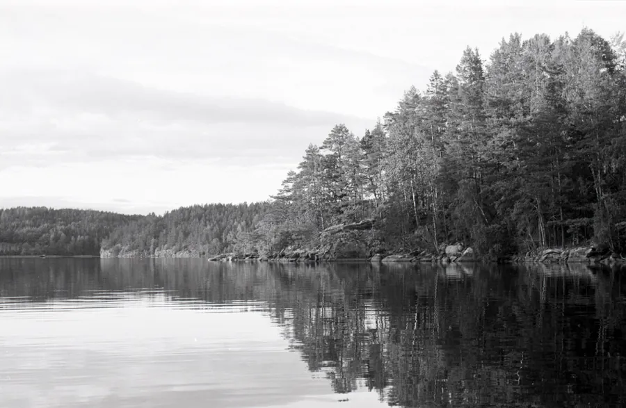
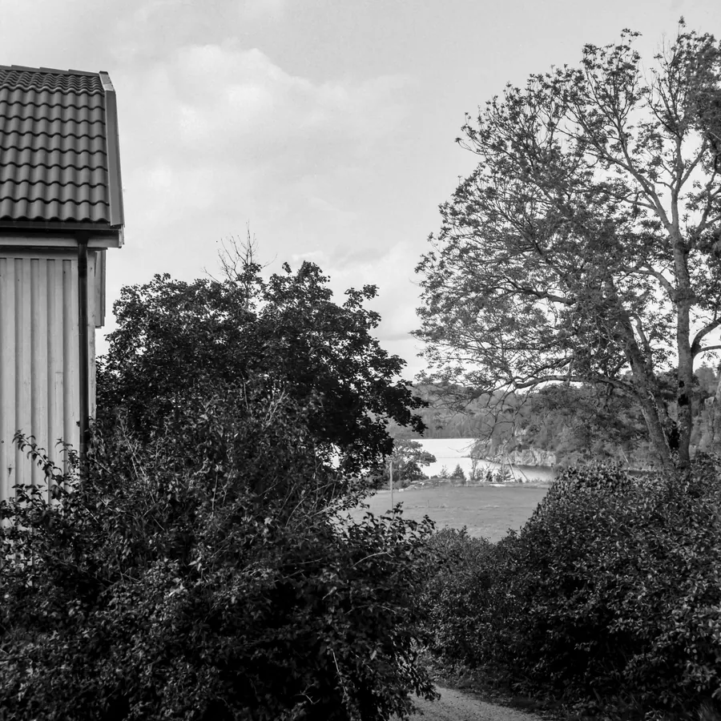
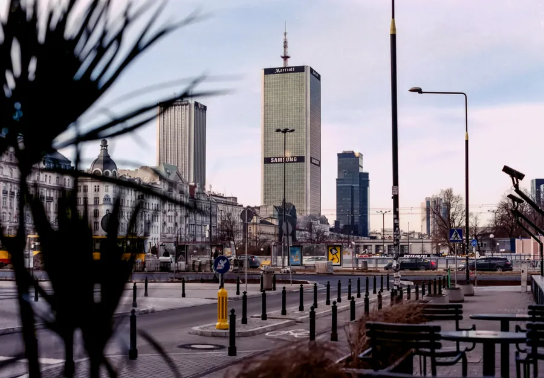
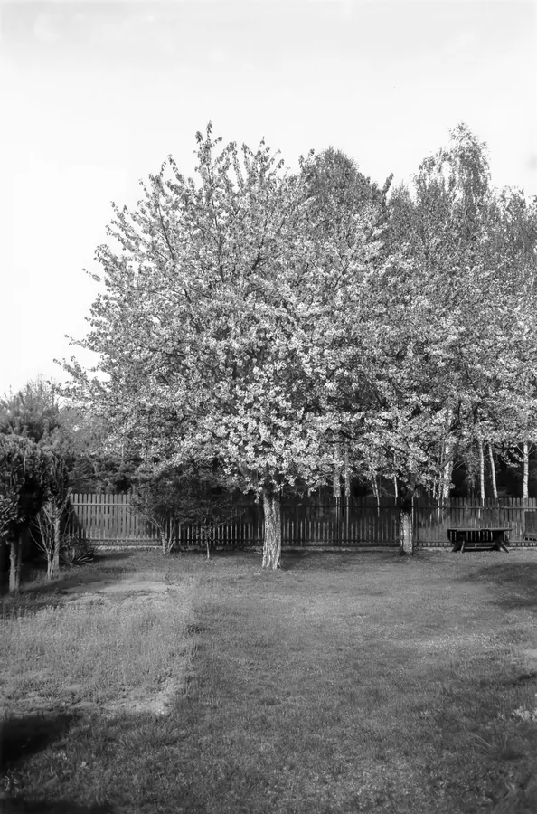

Analogowe
Zdjęcia na filmie. Każda galeria to jeden zestaw: aparat, obiektyw i film.

Nikon F90X, Kentmere Pan 100

Nikon FA, Ilford HP5 Plus

Nikon FE, Fomapan 100, Szwecja 2022 r.

Rolleiflex 3,5F, Fomapan 100, Szwecja 2022 r.

Nikon F2A, Fuji X-Tra 400, Warszawa, Wołomin 2022 r.

Horizon 202, Fujicolor 200, Warszawa 2024 r.
